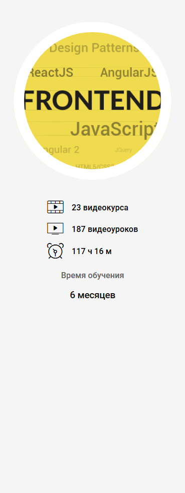

Frontend Developer
Frontend Developer

Если вы в душе дизайнер, но любите программирование и верите, что будущее за internet-технологиями, для вас интересной будет специальность Frontend-разработчика, так как она требует некоторых творческих способностей и глубокой практической подготовки по web-программированию. С помощью языка разметки страниц HTML и каскадных таблиц стилей (СSS), вы сможете создавать дизайн web-приложений, интерфейсы сайтов, подавать информацию в привлекательном виде, приятном и удобном для пользователей. На Frontend-разработчика также ложится часть ответственности за рейтинг разрабатываемого сайта, так как чем понятней будет интерфейс, чем более подходящим способом будут структурированы данные, тем больше времени пользователь уделит сайту. В данном случае разработчику просто необходимо разбираться в дизайне и теории цветов, чтобы сайт не выглядел слишком угрюмо, но и не подавлял яркостью цветов и огромным размером символов.
Знания CSS и HTML помогут разработчику сделать красивую статическую страницу, но при работе с сайтом пользователям необходимо взаимодействовать с информацией. Поэтому разработчик должен знать скриптовый язык программирования JavaScript, который делает web-страницы функциональными и интерактивными. Также применение JavaScript способствует корректному отображению страниц на устройстве пользователя, так как некоторые браузеры понимают стандарты CSS и HTML по-разному. Багаж знаний Frontend-разработчика включает также знания библиотеки JavaScript - jQuery, которая необходима для взаимодействия JavaScript и HTML. Данная библиотека используется для работы с AJAX, еще одной технологии для разработки web-интерфейсов. Технологии AJAX выполняют взаимодействие клиентской части с серверной стороной. С использованием данных средств работа приложений стает быстрее и динамичней.
Разработчик не может быть уверен, что созданный им сайт будет выглядеть также красиво и упорядочено, как на своем браузере, поэтому Frontend-разработчикам надо знать кроссбраузерную верстку, которая воспроизводит интерфейс сайтов одинаково в наиболее популярных браузерах, что придерживаются необходимых стандартов, и адаптивную верстку, которая позволяет выполнять работу сайта на разных устройствах: планшете, смартфоне, ноутбуке и т.д.
Такой большой перечень требований оправдан, так как специалист в этом направлении может получать от 500$ до 2500$ в зависимости от уровня знаний и опыта работы. На данный момент рынок труда заинтересован в специалистах такого плана и в будущем спрос на них будет только расти, ведь использование интернета, интернет-технологий за последние десять лет выросли практически в геометрической прогрессии. Почти каждая фирма, организации, предприятие имеют свой сайт и нуждаются в специалистах обеспечивающих работу этих сайтов. Существует множество интернет-компаний, IT-компаний, где Frontend-разработчик может применить свои знания.
Если вы целеустремленны, инициативны и ответственны, можете работать в команде, человек с творческими способностями и критическим мышлением, любите изучать новые технологии и пытаете интерес к разработке сайтов, вам не составит труда добиться успеха в данной области.
Требования к Frontend разработчику:
- Знание HTML, CSS
- Знание языка программирования JavaScript
- Опыт работы в HTML5, CSS3
- Хорошее понимание JS фрeймворков (Angular2/jQuery/ReactJS/Node.js)
- Знакомство с MVC/MVVM design patterns
- Умение анализировать, изучать, осваивать и применять новые технологии
- Английский язык на уровне не ниже Intermediate
JavaScript/FrontEnd разработчик может занимать такие должности:
Web разработчик FrontEnd Developer
Junior/Middle/Senior JavaScript Developer
Node.js/ReactJS JavaScript Developer
Frontend Engineer
Frontend Software Engineer
Full Stack JavaScript Developer
JavaScript Team Lead
но я вспомнил что есть еще тренажер,
и решил пройти все задачки по первым трем
урокам. Потому что успел, то успел.
😀
ОБУЧЕНИЕ
СОТРУДНИЧЕСТВО
- Стань автором
- Информационное партнерство
- Работа в IT
О ПРОЕКТЕ
- О проекте
- Контакты
- FAQ
- Архив рассылок
- Авторы